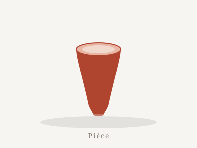
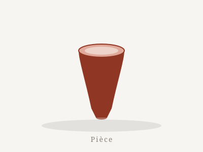
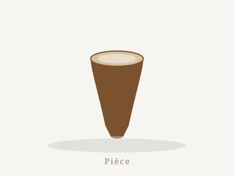

Gobelet « Sillon »
- H. 90 mm
- Ø 70 mm
- 250 ml
Paroi fine, anse enveloppante, émail terre et cendre. Le bord est affûté pour un contact agréable.
Atelier céramique — Tours
Fils de potier, je tourne le gobelet comme objet d'étude depuis cinq ans. Chaque pièce est pensée pour tenir dans la main, puis cuite et émaillée dans mon atelier.
De la terre à la tasse, chaque pièce passe par mes mains — du tour jusqu'à l'émail.
Cinq ans de tournage au quotidien, centrés sur la précision du geste et l'épaisseur régulière des parois.
Biscuit puis émaillage, cuissons menées à la courbe dans mon propre four, en surveillant chaque montée en température.
Mes émaux sont composés à l'atelier : mélanges de cendres, d'oxydes et de minéraux, testés et ajustés sur chaque fournée.
Des gobelets pensés pour la main, avec une vraie contenance et un bord qui vient sur la bouche.

Paroi fine, anse enveloppante, émail terre et cendre. Le bord est affûté pour un contact agréable.

Profil galbé qui épouse la paume, pied bas pour une prise stable, émail rouge brûlé de ma fournée d'octobre.

Le plus généreux de la série, pensé pour les longues conversations autour de la table.
« Le gobelet, c'est l'objet que je connais le mieux : je peux passer des heures à chercher l'angle exact du bord, l'épaisseur juste de la paroi, la courbe qui s'ajuste à la paume. »
Un outil en ligne pour paramétrer votre gobelet : dimensions, anneaux, matériau — jusqu'à l'état cuit. Idéal pour imaginer une pièce avant de la tourner.
Lancer le générateur →Les coulisses du tournage, de la cuisson et des émaux, en images sur Instagram.
Ou écrivez-moi : contact@axxam.net